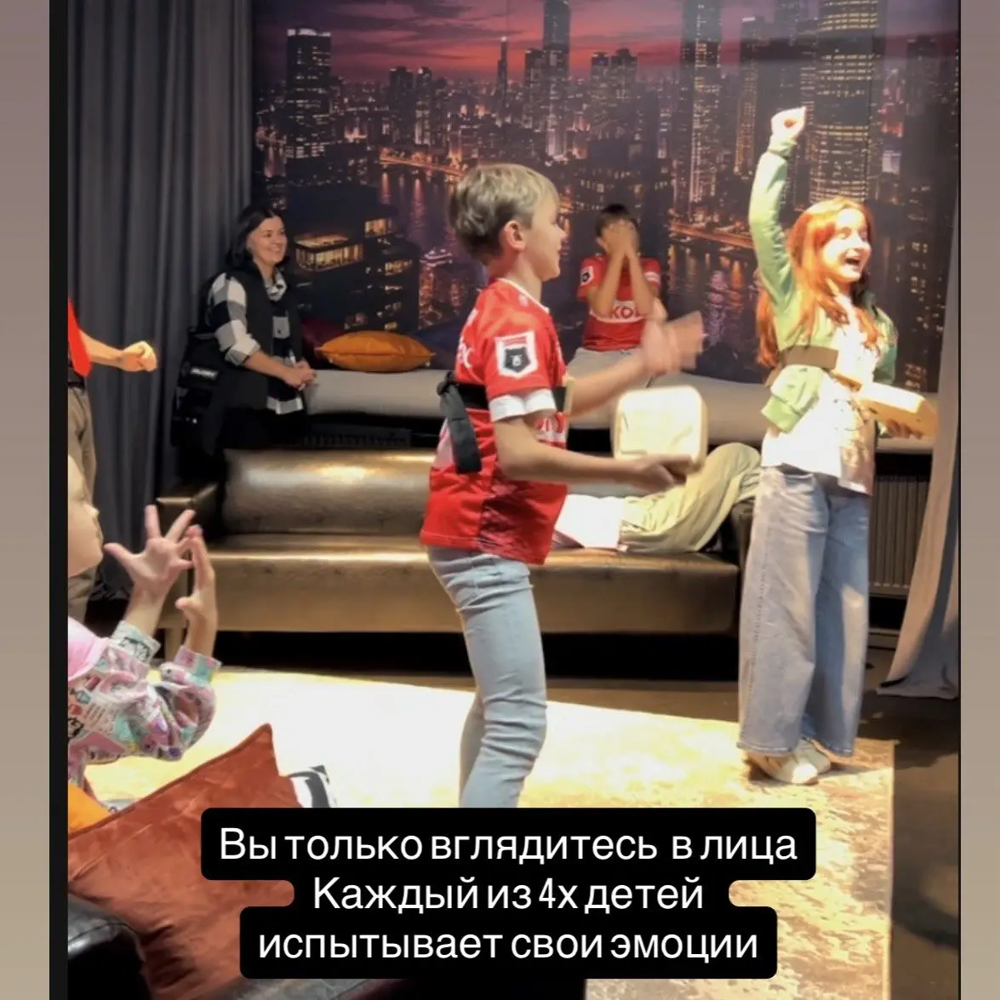

Главная ошибка — строить программу только вокруг того, что «обычно нравится девочкам». В одной компании кто-то любит танцы и музыку, кто-то игры и VR, а кто-то не хочет выходить в центр внимания. Поэтому хороший день рождения девочки 10 лет даёт несколько способов участвовать и не заставляет всех делать одно и то же весь вечер.

Сначала уточните три вещи
- Кого зовём. Для тесной компании из 6–10 друзей подойдёт один темп. Если будут одноклассники, родственники и дети разного возраста, нужна программа с понятной сменой зон.
- Что именинница любит сейчас. Не год назад: любимая музыка, игры, блогеры, танцы, творчество или соревнования быстро меняются.
- Чего она точно не хочет. Иногда один ответ — «не хочу аниматоров» или «не хочу конкурсов по одному» — сразу помогает выбрать формат.
Готовый план на 2,5–3 часа
1. Сбор гостей — 15 минут
Не начинайте главное шоу в ту же минуту, когда пришёл первый гость. Дайте детям освоиться, посмотреть пространство и спокойно включиться. Хорошо работают свободная музыка, простая игра на приставке или короткое знакомство без оценок.
2. Общее шоу — 40–50 минут
Это основа вечера: командные задания, быстрые раунды, кнопки, музыка, датчики движения. Ведущий поддерживает темп, но не играет роль сказочного персонажа. Для десятилетних важно чувствовать, что с ними разговаривают по возрасту.
3. Торт и поздравления — 15–20 минут
После активной части дети готовы сесть, перекусить и сфотографироваться. Не растягивайте застолье на час: большинство гостей снова начнут искать занятие.
4. Свободная программа — 60–90 минут
Разделите пространство на несколько точек: VR, танцы, Nintendo, караоке. Дети выбирают занятие и меняются. Такой подход снижает риск, что часть компании заскучает из-за одной игры.
Что подготовить родителям
- торт, свечи и зажигалку;
- простую еду, которую удобно брать руками;
- плейлист из 8–10 любимых треков именинницы;
- контакты родителей гостей;
- одежду и обувь, в которых удобно двигаться.
Что не обязательно покупать
Дорогая тематическая сервировка, огромная фотозона и пакет сувениров не спасут слабую программу. Лучше вложиться в занятие, которое объединит компанию, а декор оставить фоном. В «БЭНГЕРЕ» весь шоу-плейс закрывается под одну компанию: ведущий проводит диджитал-шоу, затем дети переходят к VR, танцам, Nintendo и караоке.
Если гости очень разные
Не пытайтесь добиться, чтобы каждый одинаково любил все активности. Задача программы — дать общее яркое начало и затем выбор. Более активные идут танцевать, любители игр пробуют VR или приставки, спокойные гости могут петь дуэтом или поддерживать друзей.
Перед бронированием можно прийти на бесплатную тест-игру: именинница увидит пространство, попробует оборудование и скажет, что ей действительно интересно.